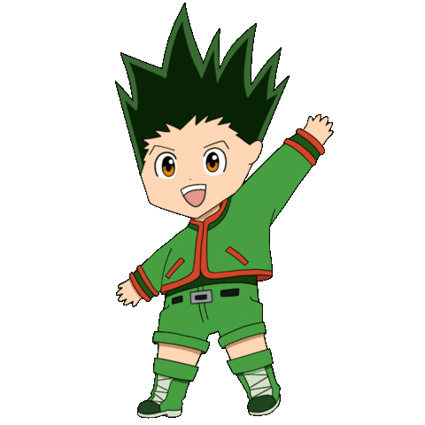
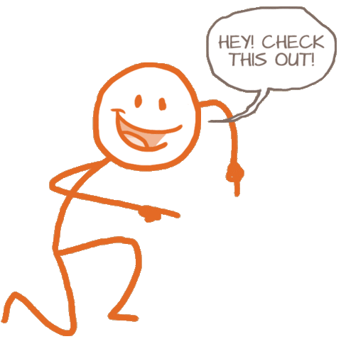

Derick Zitzke
Engenheiro de Software
- 
- 
Sobre
Olá! Seja bem-vindo(a)!
🎮 Apaixonado por tecnologia e games desde a infância, transformei meu sonho em realidade me formando em Engenharia de Software.
💻 Tenho experiência com HTML, CSS e JavaScript e estou me especializando no desenvolvimento de aplicativos Android com Kotlin, criando soluções funcionais e intuitivas para dispositivos móveis.
🚀 Sou movido por curiosidade, aprendizado constante e pela vontade de transformar ideias em projetos reais.
🎯 No mundo gamer, acompanho de perto novidades, lançamentos, hardwares e acessórios.
📺 No tempo livre, mergulho em games, animes, séries e conteúdo no YouTube, sempre buscando unir diversão e inspiração para novas criações.